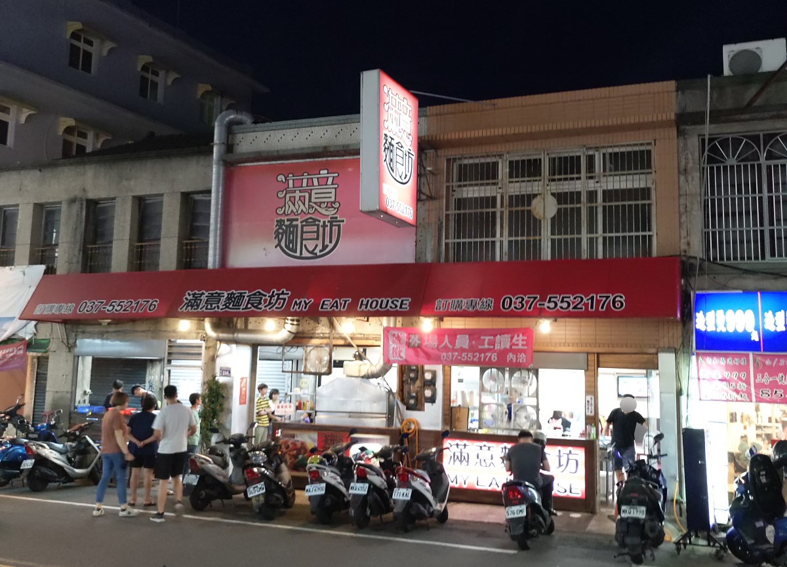
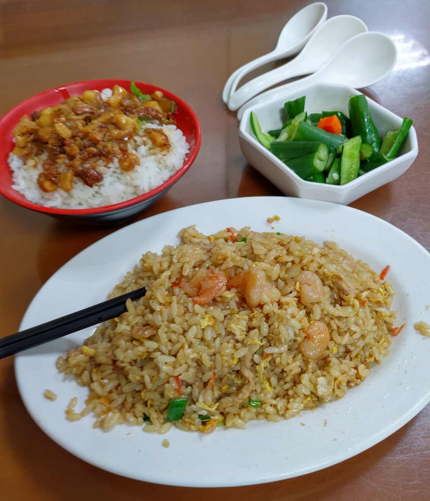
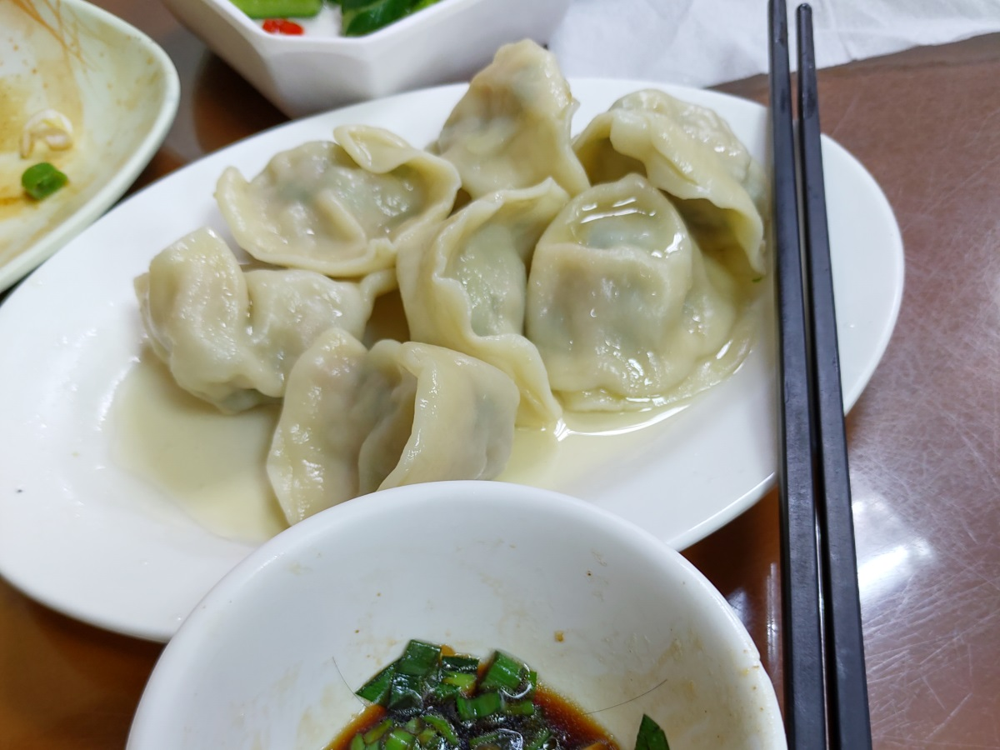
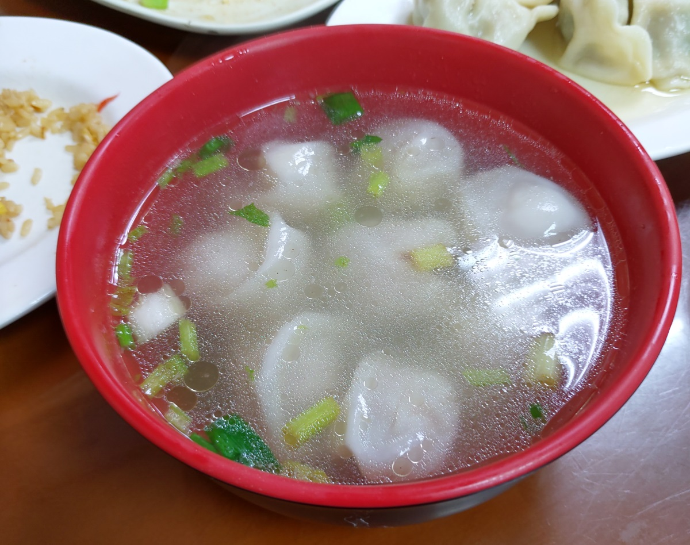
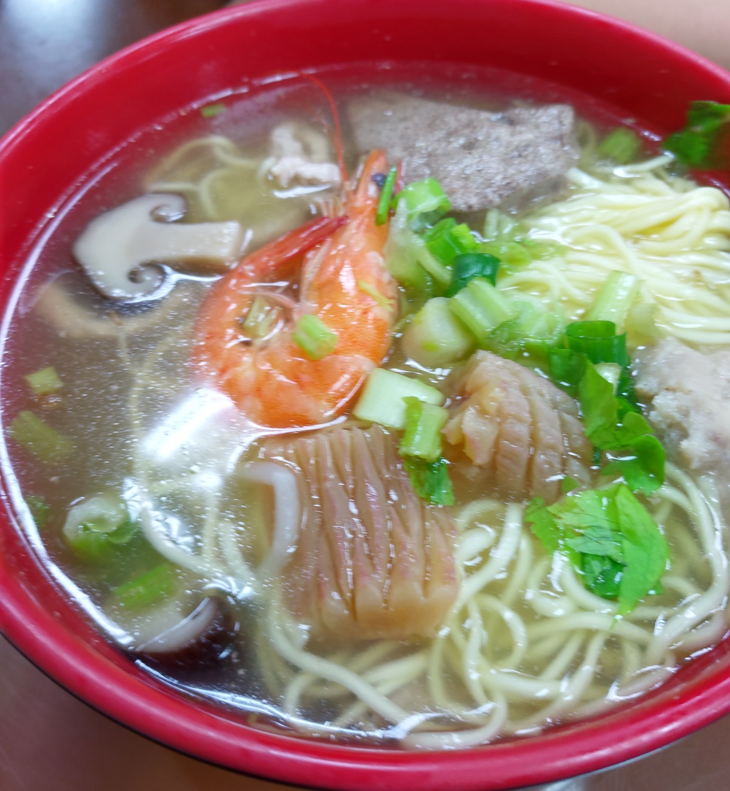

[竹南] 滿意麵食坊
餐廳名稱: 滿意麵食坊 地 址: 苗栗縣竹南鎮照南里光復路236號 營業時間: 下午4:30~晚上12:00分(週六公休)
來竹南辦事情，結束時就想到竹南在地人同事推薦的 滿意麵食坊， 就晃過來。這附近是有個公有停車場，似乎沒收費，同時鄰近餐廳 更多，停車位非常不夠。 再加上許多沒公德心的人自以為沒檔到人 地亂停。即使合法停車位空出來了，卻因為亂停，車子極難倒車進去。 停車位不夠，很多人搶停車位凶神惡煞的本性也都顯露無遺， 整個停車體驗非常糟糕。
來到店門口，果然很驚人，打通了兩個店面，用餐時段還是大客滿，還沒吃就有 信心了。 
這間店竟然炒的比煮的快，炒飯跟滷肉飯一下子就上了。 炒飯有豬油的香氣，熱騰騰的，很不錯。滷肉飯也香。挑一個涼拌黃瓜 的已裝盤小菜，普普，放很久的感覺。 
水餃也是看網路有人推薦，就點了，原來這家的派別是內餡韭菜加高麗菜， 調味OK，算好吃。 
因為看網路，已經點了 什錦湯麵 了，所以就點個餛飩湯， 乍看之下，以為是厚皮餛飩，沒想到吃起來是薄皮，只是包法 比較特殊，容易誤會。這個餛飩好吃，湯頭也不錯， 算是一碗優秀的餛飩湯。 
什錦湯麵選了意麵，湯頭跟餛飩湯是一樣的，什錦的用料也非常豐富， 但是麵本身沒有味道，也無法吸附很多湯汁，所以每一口最好麵、湯 各一半，或是麵、料各一半，仍然算優秀，只是沒想像中的美好。 
今天看這個氣勢，點了很多，當然吃不完，有隨身帶玻璃容器， 吃剩的都包回家了，沒用塑膠袋。
整間店很成功，就除了停車，用餐時段客滿，這兩件事不方便， 除此之外，蠻推薦來這間滿意麵食坊用餐的，滿意滿意真滿意。